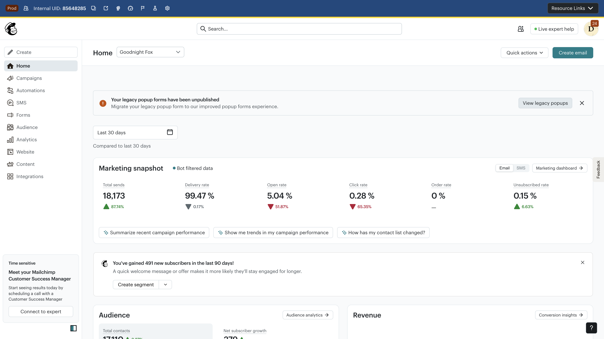
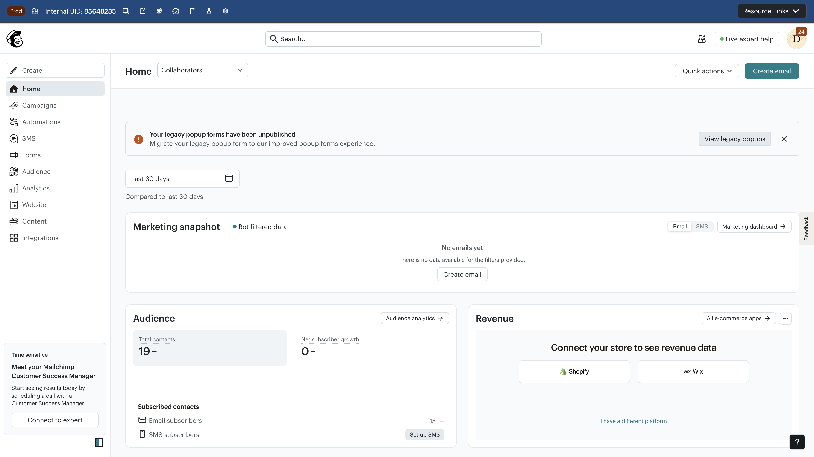
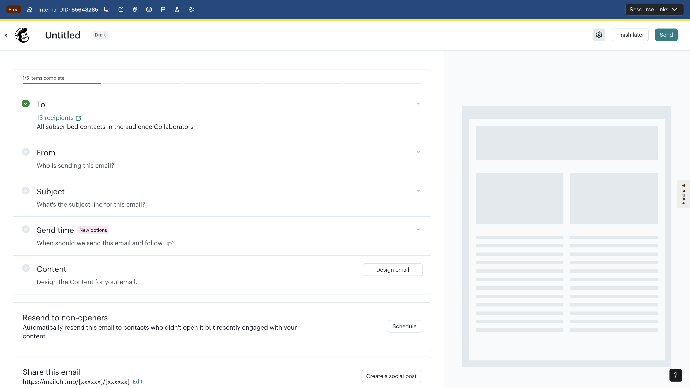
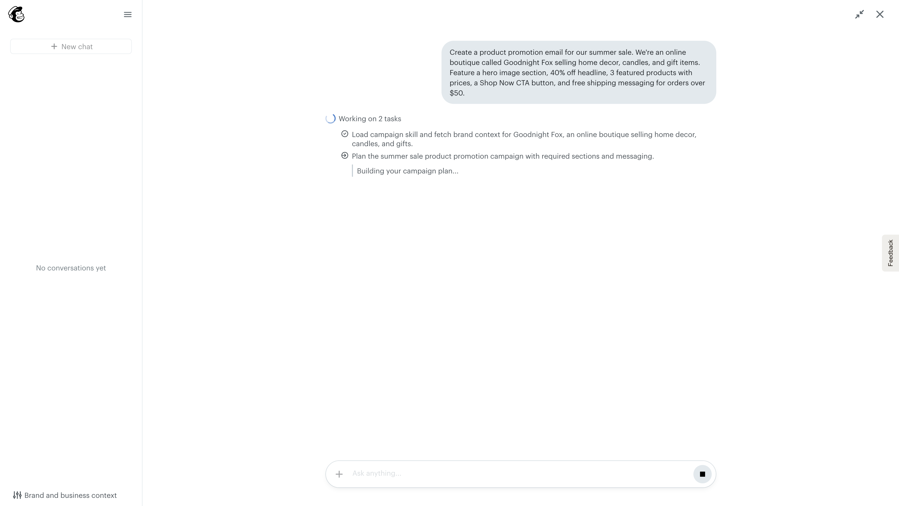
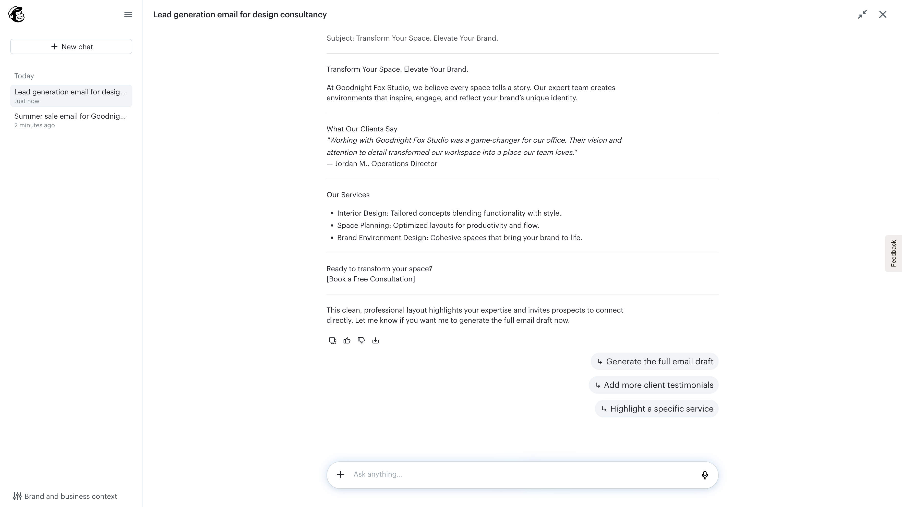
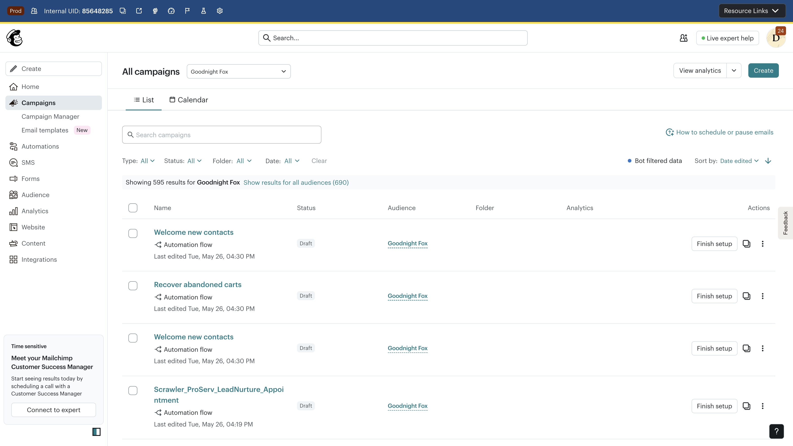

Qualitative N=1 scripted evaluation · 2 persona journeys · Draft-only, no emails sent
The AI claimed to generate a summer sale email but loaded an existing Welcome template with completely unrelated content (Goodnight Fox BOGO, educational bundles).
"Design email" in campaign checklist routes exclusively to AI Chat Editor. Users cannot reach the drag-and-drop block editor.
Instead of populating the existing campaign, the AI created a brand new campaign (different ID, different name) — losing the user's To/From configuration.
When triggering "Generate the full email draft" from the home page overlay, the AI responds with instructions to click a button in a panel that doesn't exist, creating an infinite loop.
An NPS survey iframe appears over the "Generate email" button, preventing interaction without dismissing it first.
The Unified Builder's AI Chat Editor introduces a fundamentally new email creation paradigm but has critical reliability issues. The AI generates incorrect content (UB-001), creates duplicate campaigns that discard user configuration (UB-003), and enters dead-end loops (UB-004). Until these are resolved, the experience will actively harm user trust and increase support tickets.
Complete sequential record of the Unified Builder evaluation, both personas






Objective: Create and configure a promotional email for a summer sale with product highlights, discount codes, and free shipping offer
| Step | Action | Result | Issues |
|---|---|---|---|
| 1 | Click "Create email" on dashboard | Campaign checklist opened (1/5) | — |
| 2 | Configure To (15 recipients) | Success | — |
| 3 | Configure From (goodnightfoxstudio@gmail.com) | Success, but domain rewrite warning shown | UB-006 |
| 4 | Click "Design email" | Opens AI Chat Editor (NOT template builder) | UB-002 |
| 5 | Submit summer sale prompt | AI processes for ~20s | UB-010 |
| 6 | AI generates strategy panel | Strategy looks correct; Qualtrics survey blocks button | UB-011 |
| 7 | Click "Generate email" | AI claims success, but loads WRONG content | UB-001 |
| 8 | Inspect loaded content | Welcome template (BOGO, educational bundles) — not summer sale | UB-001 |
| 9 | Check campaign list | AI created duplicate campaign (id=14205305) | UB-003 |
| 10 | Compare original vs duplicate | Original has config but no content; duplicate has content but no config | UB-003, UB-007 |
The critical failure: AI claims generation success while loading unrelated content.
The AI silently created a second campaign instead of populating the user's existing one.
| Field | Original (14205304) | AI-Created Duplicate (14205305) |
|---|---|---|
| Name | "Summer Sale: Up to 40% Off Our Best-Selling Collection" | "Summer Sale Campaign" |
| To | 15 recipients ✓ | Not configured ✗ |
| From | goodnightfoxstudio@gmail.com ✓ | Not configured ✗ |
| Subject | User-written ✓ | AI-generated (different) |
| Send time | Not set | Auto: June 2, 2026 @ 12:00 PM PT |
| Content | Not designed ✗ | Wrong template loaded ✗ |
| Sendable? | No (no content) | No (no recipients, wrong content) |
Objective: Create a lead nurture email with testimonial, services list, and consultation CTA for an interior design firm
| Step | Action | Result | Issues |
|---|---|---|---|
| 1 | Open AI Chat Editor from "Create email" | AI Chat Editor landing page | UB-002 |
| 2 | Submit ProServ lead nurture prompt | AI processes and generates content plan | UB-010 |
| 3 | Review AI content plan | ✓ Excellent content plan generated | — |
| 4 | Click "Generate the full email draft" | AI says "create and render a campaign plan in the side panel" | UB-004 |
| 5 | Click "Generate the email" again | Circular instruction: "Click 'Generate email draft' in the side panel" | UB-004 |
| 6 | Dead end — no further progress possible | BLOCKED | UB-004 |
The AI demonstrated strong content generation capability — the blocking issue is purely a UI/orchestration failure.
When the user tries to convert the plan into an actual email, the system enters a dead-end loop.
All issues discovered during the Unified Builder UX evaluation, with severity, type, persona, and evidence
Description: After the user prompts the AI to generate a summer sale promotional email, the AI reports success ("Your email draft is now in the editor with your summer sale headline, hero image, featured products...") but the editor actually displays a pre-existing Welcome template with completely unrelated content.
Expected: Generated email content matching the user's prompt — summer sale headline, product grid, discount code, free shipping CTA.
Actual: Existing template loaded: Goodnight Fox logo, "Welcome. I'm Kylie", BOGO code, educational bundles content. Zero overlap with prompt.
Impact: A non-expert user could send incorrect content to their entire list, damaging brand trust and potentially causing compliance issues. The AI's confident false-positive message ("Your draft is ready") makes this especially dangerous.
Recommendation: Implement content-prompt alignment verification before reporting success. Add a diff check between generated content and the loaded editor state. Show the user what was generated before confirming.
Description: The "Design email" button in the campaign checklist routes exclusively to the AI Chat Editor. There is no visible option to use the traditional drag-and-drop block editor, template gallery, or code editor.
Expected: A choice between AI-assisted creation and manual template builder, or at minimum a clearly visible escape hatch from the AI editor to the traditional tools.
Actual: Single-path routing to AI Chat Editor with no alternative visible.
Impact: Users who prefer manual control, have specific templates, or need the drag-and-drop builder for complex layouts are forced through an AI-first experience. Power users and agencies are most affected.
Recommendation: Add a "Use template builder" or "Build manually" link below or alongside the AI Chat Editor landing. Consider user preference memory.
Description: When the AI generates email content, it creates a brand new campaign (id=14205305) instead of populating the campaign the user already started (id=14205304). The new campaign has a different name and loses the user's To/From configuration.
Expected: AI-generated content should populate the existing campaign that the user initiated and configured.
Actual: Two campaigns exist: the original with user config (no content) and an AI-created duplicate with content (no config). Neither is sendable.
Impact: User's manual configuration work is wasted. They must either re-configure the AI campaign or manually copy content. Confusing for non-technical users who may not notice the duplication.
Recommendation: The AI should always operate within the existing campaign context. If a new campaign must be created, migrate the user's existing configuration (recipients, from address, subject) to it.
Description: When using the AI Chat Editor opened from the home page "Create email" button, clicking "Generate the full email draft" fails. The AI instructs the user to "create and render a campaign plan in the side panel" — but no side panel exists in this context. Repeated attempts loop the same instruction.
Expected: Clicking "Generate the full email draft" should either create the email or clearly explain what prerequisite is missing.
Actual: Infinite loop of circular instructions referencing UI elements that don't exist in the current view.
Impact: Complete dead end for the ProServ persona. Excellent AI-generated content plan cannot be converted to an actual email. User has no recovery path without understanding internal system architecture.
Recommendation: Detect the overlay context and auto-create the required campaign resource server-side, or redirect the user to the campaign flow. At minimum, provide a clear error: "Please create a campaign first from the Campaigns page."
Description: Once inside the AI Chat Editor, there is no visible way to switch to the drag-and-drop block editor for manual content editing. The editor shows Undo/Redo/Preview/Save but not the familiar block-level editing interface.
Expected: An option to switch to block editor mode for fine-grained control over layout, images, and content blocks.
Actual: Only AI-mediated editing is available. Users must describe changes in natural language rather than directly manipulating blocks.
Impact: Users who need pixel-level control (agencies, designers) or who want to quickly fix a typo without conversational overhead are underserved.
Recommendation: Add a toggle or "Edit manually" button that opens the block editor with the current AI-generated content pre-loaded.
Description: After setting the From address, a warning appears that the email will be rewritten to a .mailchimpapp.com domain for delivery. The messaging is technical and doesn't explain the user impact clearly.
Expected: Clear explanation of why the domain changes, what recipients will see, and how to configure a custom sending domain to avoid this.
Actual: Technical warning about domain rewriting with an "ensure delivery" link but insufficient context for non-technical users.
Impact: Users may be confused about what recipients see in their inbox. Some may abort campaign creation assuming their brand identity is lost.
Recommendation: Show a preview of what the recipient will see. Add a clear one-click path to domain authentication setup.
Description: The AI generates its own subject line and overwrites whatever the user previously configured in the campaign checklist, without asking for permission or showing a comparison.
Expected: AI should either preserve the user's subject line, offer its suggestion as an alternative, or ask before overwriting.
Actual: AI silently replaces the user's subject line with its own generated version.
Impact: Users who carefully crafted their subject line lose it without notice. Violates the principle of user control over their content.
Recommendation: Show "Your subject: X → AI suggestion: Y — Keep original or use suggestion?" before overwriting.
Description: When multiple conversations exist in the left sidebar, thread names are truncated so aggressively that they become indistinguishable. Users cannot tell which conversation contains which campaign's work.
Expected: Thread names should show enough context to differentiate (e.g., campaign name, date, or first prompt snippet).
Actual: Truncated names that all look similar, especially when the same user creates multiple campaigns in one session.
Impact: Users lose track of which conversation thread corresponds to which campaign, especially in multi-campaign workflows.
Recommendation: Show campaign name in thread title. Allow hover/tooltip for full name. Add timestamp or campaign type icon.
Description: "Create email" on the home page opens the AI Chat Editor as an overlay/modal rather than navigating to a dedicated editor page. This overlay context lacks full functionality (see UB-004).
Expected: "Create email" should navigate to a full-page editor experience with complete functionality.
Actual: Opens as an overlay that has reduced capabilities compared to the campaign-context editor.
Impact: Lower severity on its own, but contributes to UB-004's dead-end behavior when the overlay context lacks required side panels.
Recommendation: Either ensure overlay has full feature parity, or navigate to the full campaign creation flow.
Description: AI content generation takes 15-25 seconds with only a text status ("Working on 2 tasks...") as feedback. No progress bar, percentage, or estimated time remaining.
Expected: Either faster generation (<5s) or meaningful progress indication showing what's happening and estimated remaining time.
Actual: Text-only status for 15-25 seconds. Users cannot tell if the system is stuck or making progress.
Impact: Users may abandon the flow thinking it's broken, especially on slower connections. Undermines confidence in the AI's reliability.
Recommendation: Add a step-by-step progress indicator showing completed/remaining tasks with animations. Show "typically takes 15-20 seconds" estimate.
Description: A Qualtrics NPS survey iframe renders over the "Generate email" button at the bottom of the strategy panel, physically blocking the user from clicking it.
Expected: Survey intercepts should not overlap with primary action buttons. They should appear in non-blocking positions or wait until the user completes their task.
Actual: Survey iframe covers the "Generate email" button. User must dismiss the survey before proceeding.
Impact: Directly blocks the primary action. Users unfamiliar with survey dismiss patterns may think the button is broken.
Recommendation: Add z-index rules or position constraints for Qualtrics intercepts. Exclude the AI editor from survey targeting during active generation flows.
Description: The AI strategy panel and editor do not offer product catalog integration, product recommendation blocks, or dynamic product content for e-commerce users — despite having a connected store.
Expected: E-commerce users should be able to insert product blocks, browse their catalog, or have the AI pull real products into the email design.
Actual: Only generic content blocks available. No product-specific content options in the AI editor.
Impact: E-commerce users (Mailchimp's largest segment) cannot use the AI editor for their most common use case: product promotion emails with real catalog data. This is a key Klaviyo differentiator.
Recommendation: Integrate product catalog data into the AI's context. Allow "Add products" as a content block type. Surface connected store's products in the AI's suggestions.
Description: The campaign completion indicator (e.g., "1/5 complete") does not have appropriate ARIA roles for screen readers. It's rendered as a visual element without semantic meaning.
Expected: Progress indicators should use role="progressbar" with aria-valuenow, aria-valuemin, and aria-valuemax attributes.
Actual: Visual-only progress indicator with no ARIA semantics.
Impact: Screen reader users cannot determine campaign completion status programmatically.
Recommendation: Add role="progressbar" aria-valuenow="1" aria-valuemin="0" aria-valuemax="5" aria-label="Campaign setup progress".
Description: The AI-generated content disclaimer ("Content generated by AI may not be accurate") is displayed in small, muted text at the bottom of the strategy panel where users are unlikely to read it.
Expected: AI disclaimers should be visible at the point of action — when the user clicks "Generate" or when content is loaded into the editor.
Actual: Small text buried below the fold in the strategy panel.
Impact: Users may not realize they should review AI-generated content carefully before sending. Especially risky given UB-001 (wrong content loaded).
Recommendation: Show a brief, visible reminder when AI content is loaded into the editor: "AI-generated content — please review before sending."
Organized by priority tier — quick wins, medium-term improvements, and strategic investments
These issues must be resolved before expanding AI Chat Editor availability to more users.
Issue: UB-001 · Effort: Medium (2-3 sprints) · Evidence: Screenshot 07
Implement a verification step that compares AI-generated content against the user's prompt before reporting success. If the loaded content doesn't match expected structure (e.g., contains no mention of keywords from the prompt), show an error rather than a false success message.
Issue: UB-003 · Effort: Medium (2 sprints) · Evidence: Screenshot 13
Ensure AI-generated content populates the existing campaign rather than creating a new one. If a new campaign must be created (architectural constraint), migrate all user configuration (To, From, Subject) from the original.
Issue: UB-004 · Effort: Small (1 sprint) · Evidence: Screenshots 09-10
Detect when the AI editor is running in overlay mode (from home page) and either: (a) auto-create the campaign server-side before generating, or (b) redirect the user to the campaign checklist flow with their content plan preserved.
Issue: UB-002 · Effort: Small · Evidence: Screenshot 04
Add a visible link/button on the AI Chat Editor landing page: "Prefer to build manually? Use the template builder →". Route to the existing drag-and-drop editor.
Issue: UB-011 · Effort: Trivial (config change) · Evidence: Screenshot 06
Update Qualtrics intercept rules to exclude pages/overlays where the AI editor is active. Prevents survey from blocking primary action buttons.
Issue: UB-007 · Effort: Small · Evidence: Screenshot 13
Before overwriting a user-configured subject line, show: "Keep your subject line or use AI suggestion?" with both options visible.
Issue: UB-005 · Effort: Medium · Evidence: Screenshot 07
Add a "Switch to block editor" toggle that loads the current AI-generated content into the drag-and-drop interface for manual refinement.
Issue: UB-006 · Effort: Small · Evidence: Screenshot 12
Replace technical warning with user-friendly explanation: "Recipients will see your email from [user domain] — we handle delivery behind the scenes." Add one-click domain verification setup.
Issue: UB-012 · Effort: Large · Evidence: Screenshot 06
Surface connected store's product catalog in the AI editor. Allow "Insert product block" and teach the AI to reference real products, prices, and images.
Issues: UB-010, UB-008 · Evidence: Screenshot 05
Redesign the generation progress experience with: step-by-step task visualization, estimated time remaining, preview of generated sections as they complete, and clear thread naming for multi-campaign sessions.
Issues: UB-013, UB-014
Full accessibility audit of the AI Chat Editor: ARIA roles for all interactive elements, visible AI disclaimers at point of action, keyboard navigation for all editor functions.
| Priority | Issues | User Impact | Effort | Fixes |
|---|---|---|---|---|
| P0 | UB-001, UB-003, UB-004 | Blocks campaign completion, destroys trust | 4-6 sprints total | 3 fixes |
| P1 | UB-002, UB-007, UB-011 | Removes user control, blocks interaction | 2-3 sprints total | 3 fixes |
| P2 | UB-005, UB-006, UB-012 | Limits power users, confuses e-commerce | 5-7 sprints total | 3 fixes |
| P3 | UB-008, UB-009, UB-010, UB-013, UB-014 | Polish and accessibility gaps | 4-5 sprints total | 5 fixes |
12 metrics to track UX health, adoption, and quality of the Unified Builder AI experience
| Category | Metric | Why It Matters |
|---|---|---|
| Adoption | AI Editor entry rate | % of "Design email" clicks that proceed past the AI landing page. Measures first-impression acceptance of the AI-first paradigm. |
| Adoption | Template builder fallback rate | % of users who look for/request the traditional editor. High rate = forced AI adoption is causing friction (UB-002). |
| Completion | AI-to-send completion rate | % of AI editor sessions that result in a sent campaign. The ultimate success metric for the AI editor flow. |
| Completion | Content generation success rate | % of "Generate email" clicks that produce content matching the user's prompt (not wrong templates). Directly measures UB-001. |
| Quality | Content-prompt alignment score | Automated similarity score between user prompt and generated content. Catch template-loading bugs before users do. |
| Quality | Duplicate campaign creation rate | % of AI sessions that create a new campaign instead of populating the existing one. Measures UB-003. |
| Performance | Time to first content (P50, P95) | Seconds from prompt submission to content visible in editor. Measures UB-010 and overall perceived speed. |
| Performance | Dead-end rate | % of sessions hitting circular instruction loops or "generate blocked" states. Measures UB-004 and similar. |
| Trust | AI content edit rate after generation | % of generated emails that users modify before sending. High rate may indicate AI quality concerns or healthy engagement. |
| Trust | Session abandonment at generation step | % of users who leave during or immediately after the AI generation phase. Measures confidence in AI output. |
| Engagement | Average conversation turns per campaign | How many back-and-forth messages users need to get sendable content. Lower is better for simple emails; higher for complex. |
| Business | AI editor campaign performance vs. manual | Open rate, click rate, and conversion rate of campaigns created via AI editor vs. traditional builder. Measures actual value delivery. |
Prioritized product, UX, and process recommendations for the Unified Builder team
| # | Fix | Customer Impact | Issues Resolved |
|---|---|---|---|
| 1 | Content verification before success message | Prevents wrong email sends, protects brand trust | UB-001 |
| 2 | Unified campaign context (no duplicate creation) | Eliminates wasted configuration work, reduces confusion | UB-003, UB-007 |
| 3 | Overlay-to-campaign bridge | Unblocks the home-page "Create email" path entirely | UB-004, UB-009 |
| 4 | Template builder escape hatch | Restores control for power users and agencies | UB-002, UB-005 |
| 5 | Product catalog in AI editor | Makes AI editor viable for core e-commerce use case | UB-012 |
| # | Fix | Effort | Issues Resolved |
|---|---|---|---|
| 1 | Exclude AI editor from Qualtrics targeting | Config change (hours) | UB-011 |
| 2 | "Use template builder" link on AI landing | 1-2 days | UB-002 |
| 3 | Subject line preservation prompt | 2-3 days | UB-007 |
| 4 | Meaningful progress indicator | 3-5 days | UB-010 |
| 5 | Thread naming with campaign context | 2-3 days | UB-008 |
| This Report Finding | Related Intelligence | Source |
|---|---|---|
| UB-001 (wrong content loaded) | CJB "Legacy vs New Builder" confusion pattern | CJB Scrawler Report |
| UB-002 (no template builder path) | HVC theme: "CJB Still Uses Legacy Editor" — inverse problem | Mailchimp HVC Risk Map |
| UB-003 (duplicate campaign) | Activation funnel binding constraint (33.6% activation rate) | Product Health tab |
| UB-012 (no product catalog) | Klaviyo's 5-channel canvas with native Shopify product data | Klaviyo Flows Brief |
| Overall AI reliability concerns | Freddie concern: "0/17 HVC themes solved; AI shipping 8× faster than trust fixes" | Freddie Concerns |
{kind=link}
{kind=link}
{kind=link}
{kind=link}
{kind=link}
{kind=link}
{kind=link}
{kind=link}
{kind=link}
{kind=link}